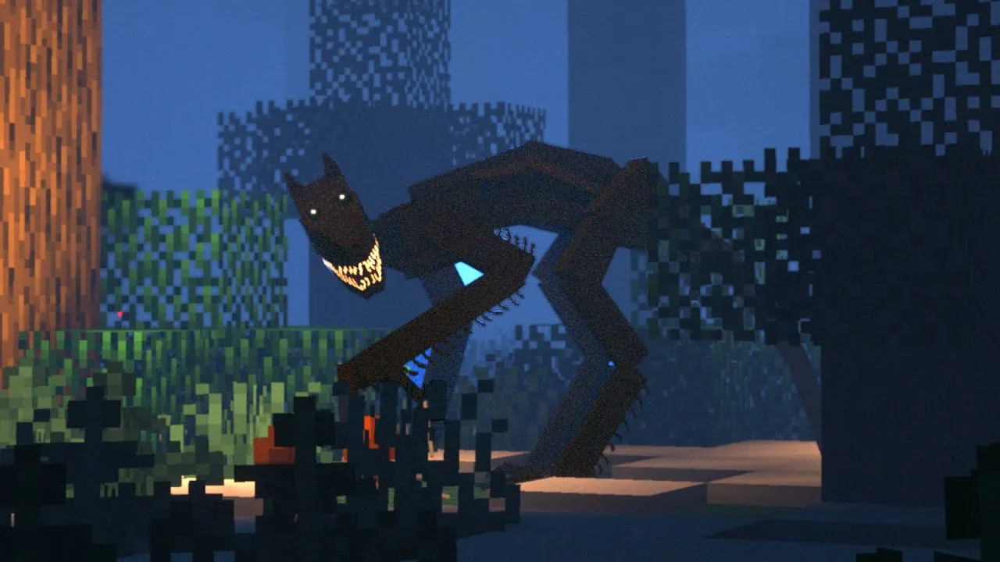

.webp)
.webp)
Immersive Horror. Добавляет 31 жуткого моба и 10 боссов, например Графа Дракулу и Чумного Доктора. Некоторые существа охраняют особые структуры, другие незаметно преследуют игрока или пугают криками. Часть локаций погружается в непроглядный туман, а звуковое сопровождение помогает предугадать появление врагов. Parasite Apocalypse. Вдохновлён последствиями катастрофы на ЧАЭС. Добавляет новых монстров и механику заражения. Dwellers. Вводит три вида страшных мобов: Чёрного человека (похож на Слендермена, но полностью чёрный), Пиноккио (превращается в злое существо, издающее пугающие звуки) и Дженни (девушка с острыми зубами). Herobrine. Позволяет добавить в игру легендарного Хиробрина — моба, о котором ходят мифы. С этим модом можно не только встретить Хиробрина, но и самому превратиться в него, получив способности к телепортации, созданию молний и невидимости. The Knocker. Добавляет непредсказуемого человекоподобного сталкера, который отслеживает движения игрока, стучит, устраивает скримеры и может наведаться во время сна. У мода улучшенный ИИ — сталкер «знает», где живёт игрок, что создаёт напряжение вокруг базы и в ночное время. Weeping Angels. Вводит известных по «Доктору Кто» Плачущих ангелов, которые двигаются, только когда их не наблюдают. Их можно обнаружить с помощью детектора Timey Wimey, а атаковать — киркой или генератором Chronodyne. Мод поддерживает Vivecraft для VR-игроков. The Broken Script. Психологический хоррор, который стирает грань между игрой и рабочим столом. Включает случайные события, вызывающие паранойю, а также взаимодействия с системой — текстовые файлы на рабочем столе, всплывающие окна, дрожание экрана, намеренные сбои и даже бан мира как часть опыта. Хоррор-сборки Сборки объединяют несколько модов для более глубокого погружения в атмосферу ужаса: MineHorror. Тяжёлая хоррор-сборка, которая включает более 40 модов. Создаёт густую атмосферу с мраком, странными событиями, жуткими локациями, скримерами и резкими звуками. Имеет формат АРГ — мир подкидывает намёки и загадки, которые нужно собирать по крупицам. CarpHoon. Сборка на версии 1.19.2, которая собирает в одном месте популярных хоррор-мобов. Атака монстров возможна не только ночью. Часть модов переработана автором — исправлены конфиги, убраны баги. Real Horror. Компактная сборка, которая делает упор на атмосферу и напряжение, а не на количество монстров. Включает новые тёмные биомы, жутковатые постройки, одного босса и несколько новых мобов. Misty Valley. Хардкорная хоррор-сборка с упором на атмосферу. Добавлены времена года, густой туман и множество данжей. Переработаны все ванильные звуки и добавлено много новых жутких звуковых эффектов. Включает свыше 60 модов. Alone in Fear. Психологический хоррор. В начале игры игрок появляется в пустом и безмолвном мире, но вскоре понимает, что он не один. Хоррор-серверы Некоторые серверы Minecraft предлагают многопользовательский хоррор-опыт: DeadMC. Сервер выживания с кровожадными зомби. Игрокам нужно объединяться, чтобы защищаться, грабить и побеждать зомби. sportskeeda.com +1 Mining Dead. Сервер, основанный на сериале «Ходячие мертвецы». Действие происходит в постапокалиптическом мегаполисе, кишащем зомби. Есть оружие, транспортные средства и более 30 уникальных наборов. EirasCraft. Хоррор-анархия сервер с хардкорным выживанием. Опасности подстерегают повсюду. Есть уникальные механики, фракции (вампиры, оборотни) и Слендермен в качестве одного из врагов. Для игры нужен только ресурспак, моды скачивать не требуется. Хоррор-карты Карты предлагают однопользовательские или кооперативные сценарии с хоррор-элементами: Maniac DBD. Адаптация игры Dead by Daylight в мире Minecraft. Напряжённое противостояние между маньяком и группой выживших на детально проработанной арене. William's Legacy: Escaping from School. Летний лагерь 1960-х годов оказался кошмаром. Нужно решать головоломки в заброшенном бункере, искать записки мальчика с синими руками и разорвать договор с демоном. Wendigo. Вдохновлён легендой о Вендиго в интерпретации игры Until Dawn. Нужно собрать 4 куска плоти с трупов, разбросанных по карте, и провести обряд очищения, чтобы изгнать злого духа. Выбор способа погружения в хоррор-атмосферу зависит от предпочтений игрока — одиночная игра, мультиплеер, моды или готовые карты.
Baldur’s Gate 3 (2023) — масштабная RPG по вселенной Dungeons & Dragons с глубокой кастомизацией, нелинейным сюжетом и тактическими боями. Alan Wake II (2023) — психологический хоррор с запутанным сюжетом, стильной картинкой и переплетением реальности и вымысла. Helldivers 2 (2024) — кооперативный шутер в сеттинге сатирической научной фантастики, где вы сражаетесь за «демократию» в галактике. Prince of Persia: The Lost Crown (2024) — метроидвания с динамичным платформингом, красивой анимацией и боями в духе классических частей серии. Tekken 8 (2024) — файтинг с отточенной боевой системой, большим выбором персонажей и сюжетной кампанией. Мобильные игры: Honkai: Star Rail (2023) — RPG от создателей Genshin Impact с пошаговыми боями, яркими персонажами и увлекательным сюжетом в космосе. Marvel Snap (на мобильных и ПК) — карточная игра с короткими партиями, неожиданными механиками и коллекцией героев Marvel. Alchemy Stars (обновления 2023–2024) — тактическая RPG с элементами головоломки, фэнтези‑сеттингом и красивой графикой. Инди‑новинки: Sea of Stars (2023) — олдскульная RPG в духе классических JRPG с пиксельной графикой, пошаговыми боями и светлой историей. Citizen Sleeper 2: Into the Neighbourhood (2024) — нарративная RPG о жизни в космосе, где вы управляете «спящим» — андроидом с человеческой душой. Viewfinder (2023) — головоломка‑приключение, где вы «встраиваете» фотографии в реальность, чтобы менять окружение и решать задачи.